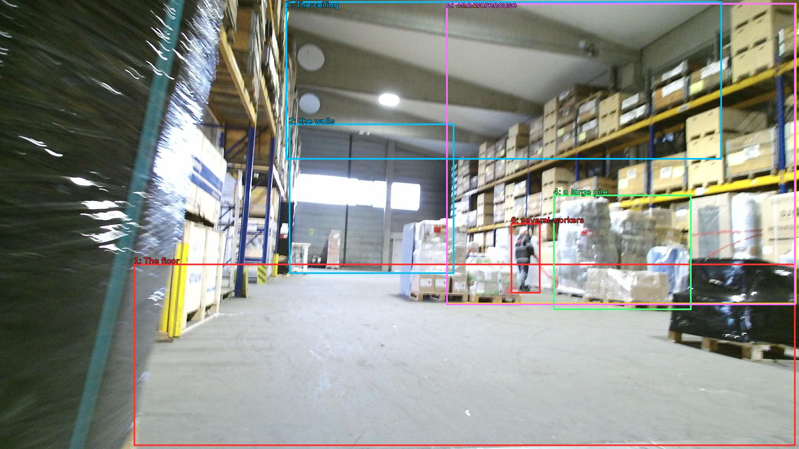

The image shows the interior of a large warehouse or storage facility. The floor is made of concrete and the walls are lined with shelves on both sides. On the left side of the image, there are stacks of cardboard boxes and pallets, and on the right side, there is a large pile of plastic bags. The warehouse appears to be well-stocked with various items, and there are several workers visible in the background. The ceiling is high and has several lights hanging from it. The overall atmosphere of the space is busy and organized.

Original · Caption raw · Grounding raw · Koordinate
Številke so lokalni ID regije. Dolge slikovne oznake so skrajšane; spodaj so celotne fraze. Napovedane regije se lahko prekrivajo ali opisujejo skupine.
| ID | Celotna fraza | bbox xyxy |
|---|---|---|
| 1 | The floor | [321.6000061035156, 634.5, 1911.3599853515625, 1072.9801025390625] |
| 2 | the walls | [694.0799560546875, 297.5400085449219, 1091.52001953125, 658.260009765625] |
| 3 | stacks | [1072.3199462890625, 7.020000457763672, 1913.2799072265625, 731.7000122070312] |
| 4 | a large pile | [1329.5999755859375, 468.1800231933594, 1661.760009765625, 745.7400512695312] |
| 5 | The warehouse | [1072.3199462890625, 7.020000457763672, 1911.3599853515625, 733.8600463867188] |
| 6 | several workers | [1227.8399658203125, 536.2200317382812, 1298.8800048828125, 705.780029296875] |
| 7 | The ceiling | [686.3999633789062, 3.7800002098083496, 1734.719970703125, 383.94000244140625] |